Суддя апеляційного суду Київської області Шевченко Олександр Васильович. Розслідування «PROSUD».
Заступник голови апеляційного суду Київської області Шевченко Олександр Васильович, як і його колега з апеляційного суду міста Києва Дмитро Сокуренко, про життя якого ми нещодавно робили розслідування, також написав заяву про відставку та звільнення з посади судді до Вищої ради юстиції.
Таким чином суддя Шевченко теж уникне проходження первинного кваліфікаційного оцінювання Вищою кваліфікаційною комісією суддів України, в тому числі й перевірки своєї декларації на відповідність набутого майна офіційним доходам.
Але ми все ж таки вирішили перевірити, чи раптом не багатомільйонне майно стало причиною і цієї поспішної відставки чергового українського судді? :)
І от що нам вдалося дізнатися.
З 2004р. Олександр Васильович володіє земельною ділянкою площею 12 соток під Києвом на території садового товариства "Побутовик", а з 2007р. - і "садовим" будинком на 300м², який до того часу встиг на цій ділянці спорудити.
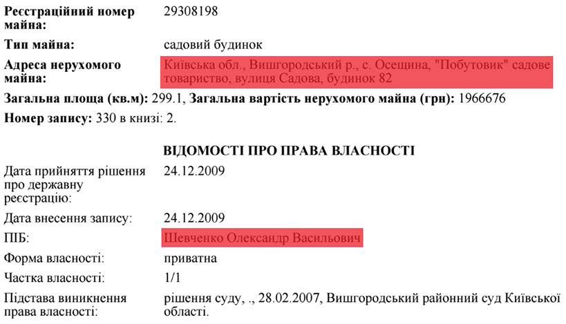
Підставою виникнення права власності зазначено рішення Вишгородського районного суду Київської області від 28.02.2007р. Ми переглянули всі рішення даного суду за той день і знайшли лише одне з подібною площею будинку та земельної ділянки, в якому йшлося про позов ОСОБИ_1до Хотянівської сільської ради Вишгородського району Київської обл. про визнання права власності на самочинне будівництво. І даний позов судом було задоволено.
До речі, визнання права власності за рішенням суду - це відома стара корупційна схема і на даний момент Верховний Суд України визнав його незаконним.
Ми ж знайшли даний "садовий будиночок" заступника голови апеляційного суду Київської області Олександра Шевченка. Ось він на фото.
А тут - на відео.
Офіційно даний маєток був оцінений у 2009р. (коли будівельні роботи були вже завершені і в цьому можна пересвідчитися, глянувши знімки супутника нижче) у скромні майже 2млн.грн. За нашою ж інформацією на сьогоднішній день, у часи фінансової кризи, дана нерухомість судді Шевченка в с.Осещина коштує мінімум 400тис.$ або майже 10млн.грн. (34 річних заробітних плат Олександра Васильовича станом на 2015р.)
Дивна ситуація з цим "садовим будиночком" пана Шевченка. В деклараціях за 2014 та 2015рр. він його вказав разом із земельною ділянкою, а за 2013р. - ні, хоча повторюємо, що вони йому належать з 2007р. та 2004р. відповідно. Забув вказати? Буває, але відповідно до ст. 366-1 Кримінального кодексу України, за подібну погану пам'ять державні чиновники, у тому числі і судді, можуть отримати "до 2 років обмеження волі з позбавленням права обіймати певні посади чи займатися певною діяльністю на строк до трьох років".
Живе ж суддя Шевченко практично на одну заробітну плату.
У своїй декларації за 2015р. він вказав 394тис.грн. сукупного доходу, з яких 289тис.грн. - його заробітна плата, а 87тис.грн. - дохід від відчуження рухомого й нерухомого майна та інші види доходів.

А в 2014р. Олександр Васильович й взагалі жив лише на свою заробітну плату судді, копійка в копійку :)
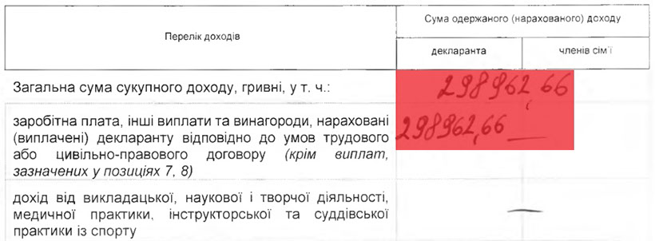
На сьогоднішній день ціна подібної нерухомості стартує від 200тис.$ або майже 5млн.грн.
Варто зазначити, що автомайданівці вже не вперше натрапляють на головного "героя" даного розслідування. З суддею Олександром Шевченком ми випадково познайомилися в грудні 2014-го під час одного з наших люстраційних рейдів київськими судами, які зганьбили себе винесенням незаконних рішень та переслідуванням активістів Автомайдану в часи Революції Гідності.
Він тоді також, як і решта суддів апеляційного суду Київської області, відмовився брати наш подарунок - картину-диптих «Суд Камбіса» або «Здирання шкіри з продажного судді» аргументуючи свою відмову тим, що мовляв подібні подарунки - це "корупція", а "корупції в апеляційному суді Київської області немає" :)
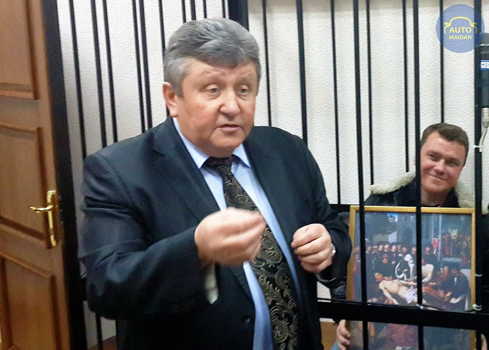
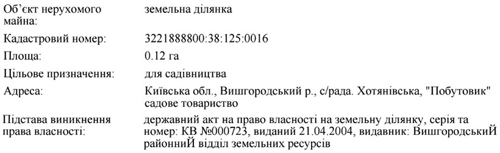
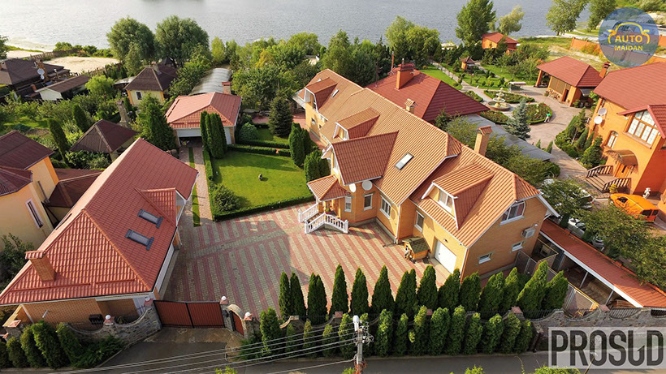
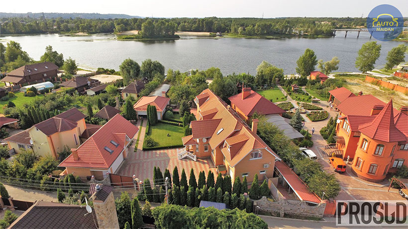
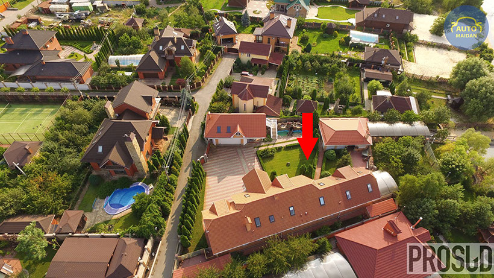
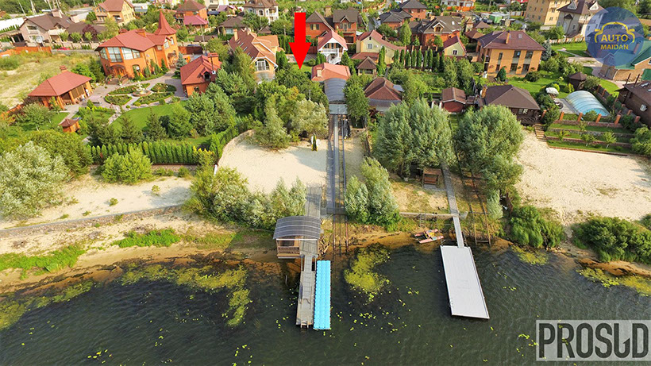
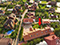
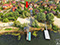
1 - 4
<
>
Але має заступник голови апеляційного суду Київської області Олександр Шевченко ще й заможну... матір, яка у вересні минулого року придбала нежитлове приміщення площею 111м² в найдорожчому Печерському районі Києва, буквально в 300м. від НСК «Олімпійський».
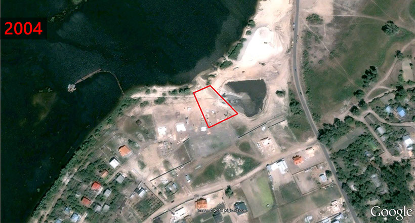
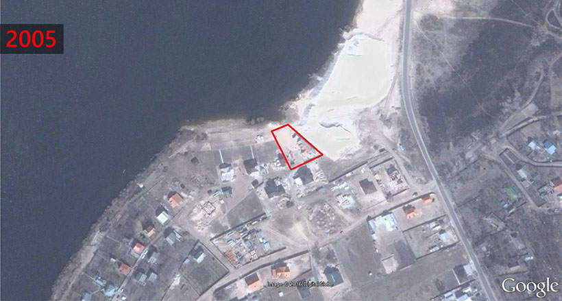
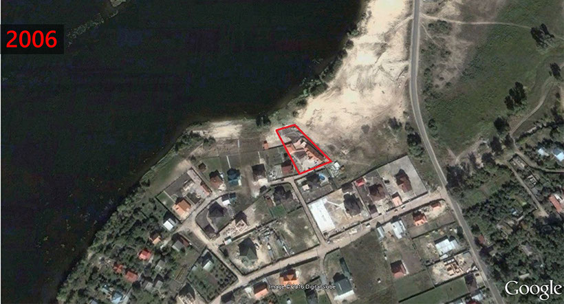
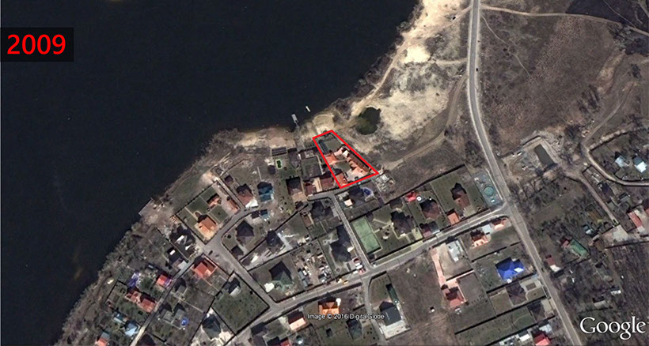
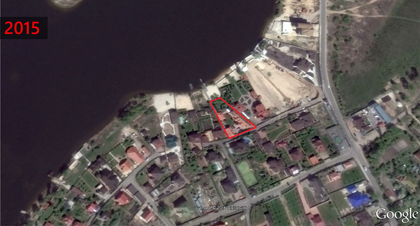
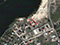
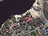
5 - 5
<
>
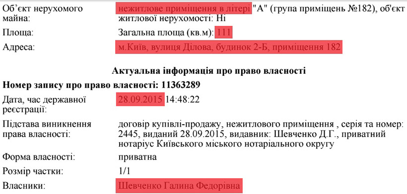
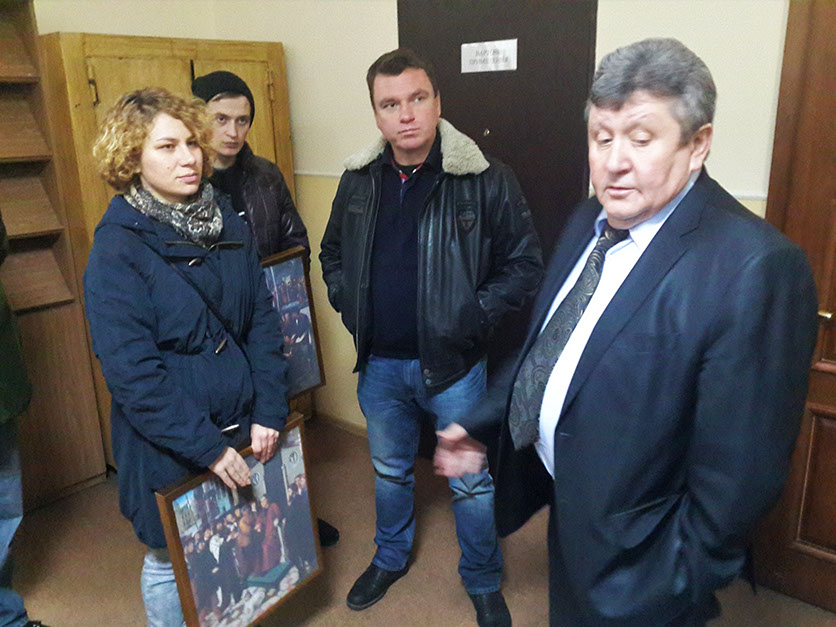
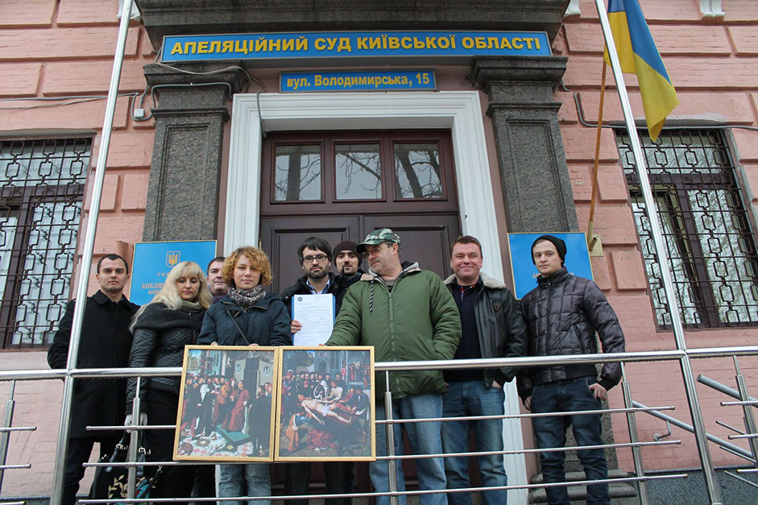
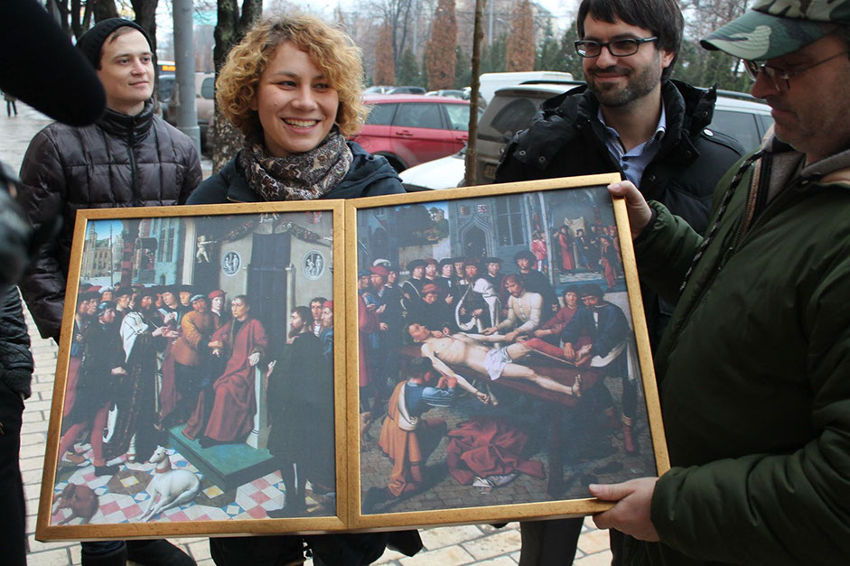
1 - 3
<
>
Відео тієї нашої зустрічі з суддею Шевченком тут (з 3хв.05сек.):
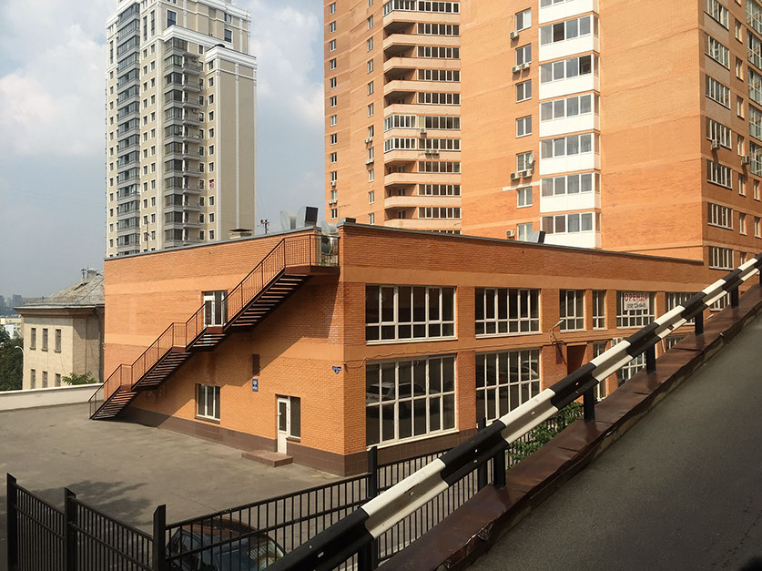
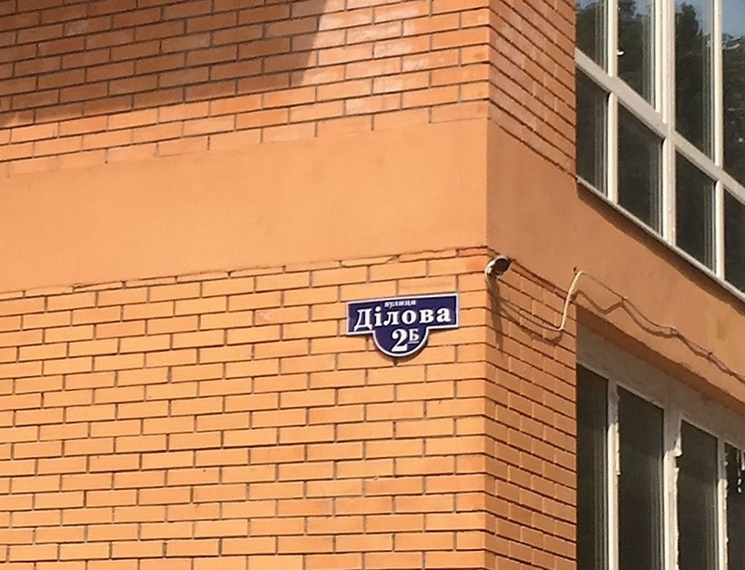
1 - 2
<
>
Ось дане приміщення за адресою вул.Ділова, 2Б, де його частину в 111м² і викупила 28 вересня 2015р. матір судді Шевченка.
Дивлячись тепер на недешевий маєток пана Шевченка та інші цікаві факти з його життя, важко повірити у ті його слова 1,5-річної давнини про "відсутність" корупції в суді, який він очолює. А ще важче віриться у щирість написаної ним статті під назвою "Основні принципи протидії корупції" у "Віснику Вищої ради юстиції" за 2011 рік :(
П.С. Короткий екскурс у біографію судді Шевченка:
З 1986 по 1993рр. - працював у прокуратурі Вишгородського району Київської обл.;
З листопада 1993 року – суддя апеляційного суду Київської обл.;
9 липня 2003 року обраний Верховною Радою України на посаду судді безстроково;
15 березня 2016 року до Вищої ради юстиції надійшла заява Шевченка О.В. про відставку.
14 квітня 2016 року Вища рада юстиції вирішила внести подання до Верховної Ради України про звільнення Шевченка О.В. з посади судді апеляційного суду Київської області у зв’язку з поданням заяви про відставку, адже даний суддя має необхідний для відставки стаж роботи, встановлений статтею 120 Закону України «Про судоустрій і статус суддів».
То ж звідки у пана Шевченка, який все своє життя пропрацював на державних посадах, взялося нерухоме майно вартістю мільйони гривень? На жаль, відповідати на це питання Олександр Васильович тепер не зобов'язаний, адже написав заяву про відставку - такий собі вихід "по-тихому" піти на пенсію для суддів, які обзавелися майном із сумнівних доходів.
Ну нічого, подібні питання суддям ми все одно ставитимемо, навіть якщо вони масово зараз втікають у відставки, а висновки з цього нехай вже робить українське суспільство, яке і буде оплачувати життя подібних суддів після їхньої втечі на пенсію.
Дана інформація буде нами офіційно передана до Національного антикорупційного бюро України, Національного агентства з питань запобігання корупції, Вищої кваліфікаційної комісії суддів України та Вищої ради юстиції. PROSUD
Copyright © 2016 PROSUD